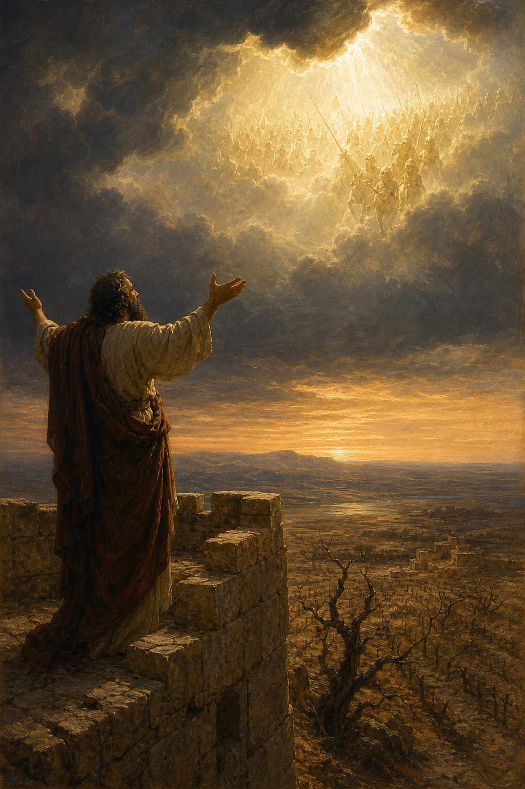

Old Testament · Book 35 of 39
Habakkuk
A prophet does something almost no one else in Scripture dares to do: he argues with God out loud, demands an answer, and then climbs a watchtower to wait for one.
Unlike most prophets who speak God's words to the people, Habakkuk mostly speaks to God directly, demanding to know why injustice goes unpunished and then recoiling at God's answer, before finally settling into a trust that doesn't depend on circumstances improving.
Although the fig tree shall not blossom... yet I will rejoice in the LORD, I will joy in the God of my salvation.
What happens in Habakkuk
Habakkuk opens not with a message to deliver but with a complaint to file: he cries out to God asking how long violence and injustice in Judah will go unanswered, and why the law seems powerless to stop it. God's answer is more troubling than silence would have been, he is raising up the Chaldeans, a fierce and terrifying nation, to carry out judgment. Stunned that God would use a nation even more wicked than Judah to punish Judah, Habakkuk presses further, and climbs a watchtower to wait for a response, famously resolved to see what God will say to his complaint. The answer comes as a statement that echoes through the rest of Scripture: the righteous will live by faith, not by resolved circumstances, while the proud and the oppressors are pronounced doomed through a series of five woes condemning violence, greed, exploitation, and idolatry. The book closes with Habakkuk's own prayer, a sweeping vision of God marching through history in power to save his people, and ends in one of the most quoted declarations of faith in the Bible: even if every crop fails and every flock dies, he will still rejoice in the God of his salvation.
Why it matters
Habakkuk gives permission to bring honest, unresolved questions straight to God rather than suppressing them, and models what faith looks like when the answer to prayer isn't comfort but a harder truth to live with. Its declaration that "the just shall live by his faith" becomes a cornerstone of New Testament theology, quoted three times by Paul and in Hebrews as foundational to the gospel itself.